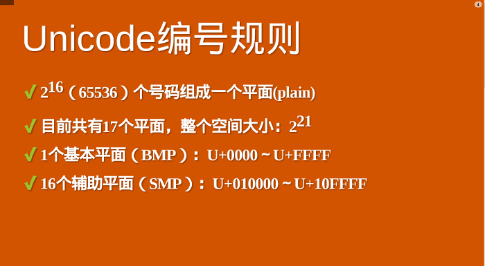

原文连接:https://www.cnblogs.com/moqiutao/p/10865022.html
类型
七种类型：
- Undefined
- Null
- Boolean
- String
- Number
- Symbol
- Object
Undefined、Null
阅读问题：为什么有的编程规范要求使用void 0 代替undefined？
Undefined类型表示未定义，它的类型只有一个值即undefined，任何变量在赋值前都是Undefined类型，它的值是undefined。由于JS中的undefined是一个变量，而并非是一个关键字，这是JavaScript语言公认的设计失误之一。因此，为了避免无意中被篡改，一般用void 0来获取undefined的值。
Null类型也只有一个值为null,null是JavaScript的关键字，可以使用null关键字来获取null值。
关于void运算符，有两种写法：
- 1.void expression
- 2.void (expression)
void运算符的操作数可以是任意类型。该运算符指定要计算一个表达式但是不论该表达式原来是否有自己的返回值，其返回值都为undefined。其作用如下：
作用一：返回undefined,(对于为什么不直接使用undefined，是因为undefined不是关键字，意味着它随时可能被篡改成其他值。。。)。
作用二：防止不必要的行为，如下代码：
<a href='javascript:void(0)'>阻止默认行为跳转</a>例子：
function func(){
return this;
}
console.log(void func()); //undefined从上所述就能够说明为什么有的编程规范要求用void 0代替undefined。
String
问题：字符串是否有最大长度？
首先，String有最大长度为2^53-1，但这个所谓的最大长度并不完全是你所理解中的字符数。因为String的意义，并非“字符串“，而是字符串的UTF16编码。我们字符串的方法charAt、charCodeAt、length等方法都是针对的是UTF16编码。所以，字符串的最大长度实际上是受字符串的编码长度影响的。
现行的字符集国际标准，字符是以 Unicode 的方式表示的，每一个 Unicode 的码点表示一个字符，理论上，Unicode 的范围是无限的。UTF 是 Unicode 的编码方式，规定了码点在计算机中的表示方法，常见的有 UTF16 和 UTF8。 Unicode 的码点通常用 U+??? 来表示，其中 ??? 是十六进制的码点值。 0-65536（U+0000 - U+FFFF）的码点被称为基本字符区域（BMP）。剩下的字符都放在辅助平面（缩写SMP），码点范围从U+010000一直到U+10FFFF。如下图所示：

码点解释：它从0开始，为每个符号指定一个编号，这叫做"码点"（code point）。比如，码点0的符号就是null（表示所有二进制位都是0）。
U+0000 = null上式中，U+表示紧跟在后面的十六进制数是Unicode的码点。

详细的编码可参考：
Number
JavaScript的Number类型有2^64-2^53+3个值。JS的Number类型基本符合IEEE 754-2008规定的双精度浮点数规则。但是JS为了表达几个额外的语言场景（比如不让除以0出错，引入了无穷大的概念），规定了几个例外情况：
- NaN：占用了 9007199254740990，这原本是符合IEEE 规则的数字；
- infinity：正无穷大；
- -infinity：负无穷大。
JS中+0和-0，在除法场合需要特别留意，“忘记检测除以-0，而得到负无穷大”的情况经常会导致错误，而区分+0和-0的方式，正是检测1/x是infinity和-infinity。
根据双精度浮点数的定义，Number类型的有效的整数范围是 -0x1fffffffffffff 至 0x1fffffffffffff，所以Number无法精确表示此范围外的整数。
为什么在JavaScript中，0.1+0.2不能=0.3?
console.log( 0.1 + 0.2 == 0.3) //false左右两边不相等的原因就是浮点数运算的结果。浮点数运算的精度问题导致等式左右的结果并不是严格相等，而是相差了个微小的值。
所以实际上，这里错误的不是结论，而是比较的方法，正确的比较方法是使用 JavaScript 提供的最小精度值：
console.log(Math.abs(0.1 + 0.2 - 0.3) <= Number.EPSILON) //true检查等式左右两边差的绝对值是否小于最小精度，才是正确的比较浮点数的方法。这段代码结果就是 true 了。
Symbol
创建symbol的方式如下：
var mysymbol = Symbol('my symbol'); //Symbol(my symbol)可以使用Symblo.interator定义for...of在对象上的行为：
var obj = {
a:1,
b:2,
[Symbol.iterator]:function(){
var v = 0;
return {
next:function(){
return {value:v++,done:v>10}
}
}
}
};
for(var v of obj){
console.log(v); //0 1 2 3 4 5 6 7 8 9
}Object
问题描述：为什么给对象添加的方法能用在基本类型上？
Object 是 JavaScript 中最复杂的类型，也是 JavaScript 的核心机制之一。
在 JavaScript 中，对象的定义是“属性的集合”。属性分为数据属性和访问器属性，二者都是 key-value 结构，key 可以是字符串或者 Symbol 类型。
JavaScript 中的几个基本类型，都在对象类型中有一个“亲戚”。它们是：
- Number
- String
- Boolean
- Symbol
我们必须认识到 3 与 new Number(3) 是完全不同的值，它们一个是 Number 类型， 一个是对象类型。
Number、String 和 Boolean，三个构造器是两用的，当跟 new 搭配时，它们产生对象，当直接调用时，它们表示强制类型转换。Symbol 函数比较特殊，直接用 new 调用它会抛出错误，但它仍然是 Symbol 对象的构造器。
JavaScript 语言设计上试图模糊对象和基本类型之间的关系，我们日常代码可以把对象的方法在基本类型上使用，比如：
console.log("abc".charAt(0)); //a甚至我们在原型上添加方法，都可以应用于基本类型，比如以下代码，在 Symbol 原型上添加了 hello 方法，在任何 Symbol 类型变量都可以调用。
Symbol.prototype.helloWorld = () => console.log("hello world");
var a = Symbol("a");
console.log(typeof a); //symbol，a 并非对象
a.helloWorld(); //hello world，有效针对上面的问题，答案就是： .运算符提供了装箱操作，它会根据基础类型构造一个临时对象，使得我们能在基础类型上调用对应对象的方法。
装箱转换
每一种基本类型 Number、String、Boolean、Symbol 在对象中都有对应的类，所谓装箱转换，正是把基本类型转换为对应的对象，它是类型转换中一种相当重要的种类。
前文提到，全局的 Symbol 函数无法使用 new 来调用，但我们仍可以利用装箱机制来得到一个 Symbol 对象，我们可以利用一个函数的 call 方法来强迫产生装箱。
我们定义一个函数，函数里面只有 return this，然后我们调用函数的 call 方法到一个 Symbol 类型的值上，这样就会产生一个 symbolObject。
我们可以用 console.log 看一下这个东西的 type of，它的值是 object，我们使用 symbolObject instanceof 可以看到，它是 Symbol 这个类的实例，我们找它的 constructor 也是等于 Symbol 的，所以我们无论从哪个角度看，它都是 Symbol 装箱过的对象：
var symbolObject = (function(){ return this; }).call(Symbol("a"));
console.log(typeof symbolObject); //object
console.log(symbolObject instanceof Symbol); //true
console.log(symbolObject.constructor == Symbol); //true装箱机制会频繁产生临时对象，在一些对性能要求较高的场景下，我们应该尽量避免对基本类型做装箱转换。
使用内置的 Object 函数，我们可以在 JavaScript 代码中显式调用装箱能力。
var symbolObject = Object(Symbol("a"));
console.log(typeof symbolObject); //object
console.log(symbolObject instanceof Symbol); //true
console.log(symbolObject.constructor == Symbol); //true每一类装箱对象皆有私有的 Class 属性，这些属性可以用 Object.prototype.toString 获取：
var symbolObject = Object(Symbol("a"));
console.log(Object.prototype.toString.call(symbolObject)); //[object Symbol]在 JavaScript 中，没有任何方法可以更改私有的 Class 属性，因此 Object.prototype.toString 是可以准确识别对象对应的基本类型的方法，它比 instanceof 更加准确。
但需要注意的是，call 本身会产生装箱操作，所以需要配合 typeof 来区分基本类型还是对象类型。
在 ES5 开始，[[class]] 私有属性被 Symbol.toStringTag 代替，Object.prototype.toString 的意义从命名上不再跟 class 相关。我们甚至可以自定义 Object.prototype.toString 的行为，以下代码展示了使用 Symbol.toStringTag 来自定义 Object.prototype.toString 的行为：
var obj = {
[Symbol.toStringTag]:'myobject'
}
console.log(obj + ''); //[object myobject]这里创建了一个新对象，并且给它唯一的一个属性 Symbol.toStringTag，我们用字符串加法触发了 Object.prototype.toString 的调用，发现这个属性最终对 Object.prototype.toString 的结果产生了影响。
注：以下代码展示了所有具有内置 class 属性的对象：
var o = new Object;
var n = new Number;
var s = new String;
var b = new Boolean;
var d = new Date;
var arg = function(){ return arguments }();
var r = new RegExp;
var f = new Function;
var arr = new Array;
var e = new Error;
console.log([o, n, s, b, d, arg, r, f, arr, e].map(v => Object.prototype.toString.call(v)));
//["[object Object]", "[object Number]", "[object String]", "[object Boolean]", "[object Date]", "[object Arguments]", "[object RegExp]", "[object Function]", "[object Array]", "[object Error]"]拆箱转换
在 JavaScript 标准中，规定了 ToPrimitive 函数，它是对象类型到基本类型的转换（即，拆箱转换）。
对象到 String 和 Number 的转换都遵循“先拆箱再转换”的规则。通过拆箱转换，把对象变成基本类型，再从基本类型转换为对应的 String 或者 Number。
拆箱转换会尝试调用 valueOf 和 toString 来获得拆箱后的基本类型。如果 valueOf 和 toString 都不存在，或者没有返回基本类型，则会产生类型错误 TypeError。
var obj = {
valueOf:() => {
console.log('valueOf');
return {};
},
toString:() => {
console.log('toString');
return {};
}
}
obj * 2;
//valueOf
//toString
//Uncaught TypeError: Cannot convert object to primitive value从上面结果可以看出，拆箱操作失败了。
到 String 的拆箱转换会优先调用 toString。那么你会看到调用顺序就变了，如下代码：
var obj = {
valueOf:() => {
console.log('valueOf');
return {};
},
toString:() => {
console.log('toString');
return {};
}
}
String(obj);
//toString
//valueOf
//Uncaught TypeError: Cannot convert object to primitive value在 ES6 之后，还允许对象通过显式指定 @@toPrimitive Symbol 来覆盖原有的行为。
var obj = {
valueOf:() => {
console.log('valueOf');
return {};
},
toString:() => {
console.log('toString');
return {};
},
[Symbol.toPrimitive]: () => {
console.log('toPrimitive');
return 'result msg';
}
}
console.log( obj + '');
//toPrimitive
//result msg